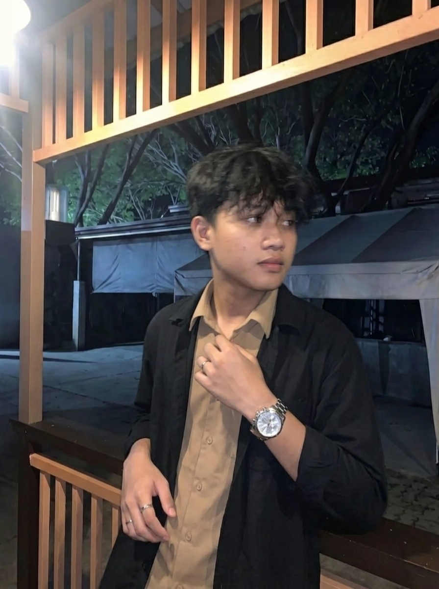

Halo semua, saya
Dava Haikal Anggoro
Front-End Developer & Mahasiswa Ilmu Komputer
Lulusan SMK yang saat ini sedang menempuh pendidikan S1 Ilmu Komputer. Memiliki ketertarikan pada pengembangan sistem web, jaringan komputer, dan teknologi informasi. Berkomitmen untuk terus belajar, mengembangkan keterampilan, serta menambah pengalaman melalui perkuliahan dan proyek.

About Me
Mengenal latar belakang, fokus akademik, dan keahlian saya
Saya adalah mahasiswa S1 Ilmu Komputer yang memiliki ketertarikan pada teknologi informasi, pengembangan perangkat lunak, dan sistem cerdas. Saat ini, saya sedang membangun dasar pengetahuan dan keterampilan di bidang komputer melalui proses perkuliahan, pembelajaran mandiri, serta eksplorasi teknologi. Saya berkomitmen untuk terus belajar, mengembangkan kemampuan, dan menghasilkan proyek yang dapat menjadi bekal untuk berkarier di bidang teknologi informasi.
Memiliki ketertarikan dalam pengembangan website, analisis data, dan kecerdasan buatan (Artificial Intelligence). Saat ini, saya sedang mempelajari dasar-dasar teknologi informasi dan mengembangkan keterampilan melalui perkuliahan serta pembelajaran mandiri. Saya juga terbuka untuk mengikuti kegiatan organisasi, berkolaborasi dalam proyek, dan memperoleh pengalaman baru guna meningkatkan kemampuan di bidang teknologi.
Education
Latar belakang pendidikan formal
S1 Ilmu Komputer
Universitas Muhammadiyah Metro
Saat ini sedang menempuh pendidikan S1 Ilmu Komputer dan berfokus pada pengembangan dasar pengetahuan di bidang teknologi informasi, algoritma, serta rekayasa perangkat lunak. Terus mengembangkan kemampuan melalui proses perkuliahan, pembelajaran mandiri, dan eksplorasi teknologi untuk mendukung pengembangan akademik dan karier di masa depan.
Skills & Certifications
Keahlian terverifikasi dan sertifikasi kompetensi
Contact
Mari terhubung dan berkolaborasi bersama
Informasi Kontak
Silakan hubungi saya melalui jalur resmi di bawah ini:
- Email: davahaikall13@gmail.com
- WhatsApp / Telp: 085766840113
- Instagram: Instagram.com/anotherside.kal
- GitHub: github.com/sagii13
- Lokasi: Sekampung, Lampung, Indonesia